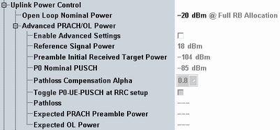

The following parameters configure the PRACH power and the initial PUSCH power.
By default, the basic settings apply (see Figure "OL and PRACH power control"). Only the "Open Loop Nominal Power" is configurable. The advanced settings are not configurable and the grayed-out values indicate the used basic settings.
If you enable the advanced settings, the grayed-out values become configurable. Instead, the "Open Loop Nominal Power" parameter is disabled.
For carrier aggregation scenarios, you can configure the settings per uplink, if joint UL power control is disabled.

Defines a cell-specific nominal power value for full resource block allocation in the UL (entire cell bandwidth used). From this value, the cell-specific nominal power value related to one resource block is determined and sent to all UEs via broadcast.
The UE uses this value for calculation of the average power of an SC-FDMA symbol in which the PUSCH is transmitted. The calculation is described in 3GPP TS 36.213 (see PO_NOMINAL_PUSCH).
This power control procedure is performed during connection setup. Afterwards, the power remains constant until changed by TPC commands.
The parameter is only relevant and configurable if the "Advanced PRACH/OL Power" settings are disabled.
Remote command:Enables configuration of the advanced parameters.
If disabled, the following parameters are grayed out and display the used basic settings.
Remote command:Specifies the parameter "referenceSignalPower", signaled to the UE as PDSCH configuration parameter (see 3GPP TS 36.331, section 6.3.2).
The value is used by the UE to determine the pathloss, see 3GPP TS 36.213 section 5.1.1.1.
Remote command:Specifies the parameter "preambleInitialReceivedTargetPower", signaled to the UE as common RACH parameter (see 3GPP TS 36.331, section 6.3.2).
In 3GPP TS 36.213, section 5.1.1.1 this parameter is called PO_PRE.
The value is used by the UE, for example, to calculate the power of the first preamble.
Remote command:Specifies the parameter "p0-NominalPUSCH", signaled to the UE as uplink power control parameter (see 3GPP TS 36.331, section 6.3.2).
In 3GPP TS 36.213, section 5.1.1.1 this parameter is called PO_NOMINAL_PUSCH.
Remote command:Specifies the parameter "alpha", signaled to the UE as uplink power control parameter (see 3GPP TS 36.331, section 6.3.2).
In 3GPP TS 36.213, section 5.1.1.1 this parameter is called α.
Remote command:With enabled toggling, the following P0-UE-PUSCH values are set during RRC connection setup:
- RRC connection setup message (SRB1): P0-UE-PUSCH = 1 dB
- RRC connection reconfiguration message (SRB2+DRB): P0-UE-PUSCH = 0 dB
P0-UE-PUSCH toggling is required for some 3GPP conformance tests, for example 3GPP TS 36.521, section 6.3.5.1 "Power Control Absolute power tolerance", table 6.3.5.1.4.3-4.
The toggling initiates a "TPC accumulation reset" at the UE (fc(i) is set to 0, see 3GPP TS 36.213, section 5.1.1.1).
Note: Toggling deletes a PRACH ramp-up procedure. Disable toggling if a PRACH ramp-up procedure is required for decoding of the UE signal. Otherwise, the RRC connection setup fails.
Note: Use toggling only if the external attenuation is compensated accurately. Otherwise, do not use toggling, for example for over-the-air tests with fluctuating external attenuation.
Displays the pathloss resulting from the "Reference Signal Power" and the "RS EPRE".
Remote command:Displays the expected power of the first preamble.
The value depends on the "preambleInitialReceivedTargetPower" ("Preamble Initial Received Target Power") and on the preamble format resulting from the configuration index ("Configuration Index").
For details, see 3GPP TS 36.321 section 5.1.
Remote command:Displays the expected initial PUSCH power. Most of the advanced power settings influence this value.
You can use the displayed values to verify your configuration: With a correct configuration, the expected PRACH power is not larger than the expected OL power. It is also not very much lower. Otherwise the PRACH cannot be detected and the attach procedure fails.
Remote command: